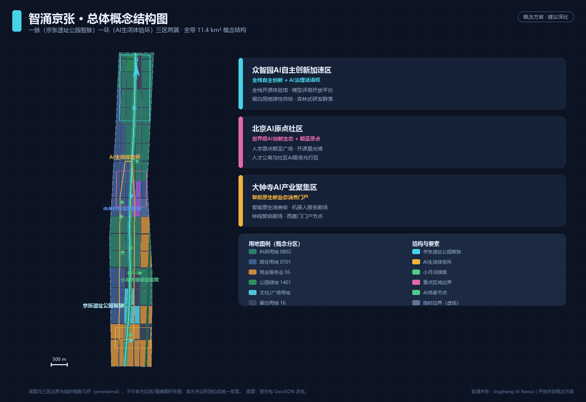
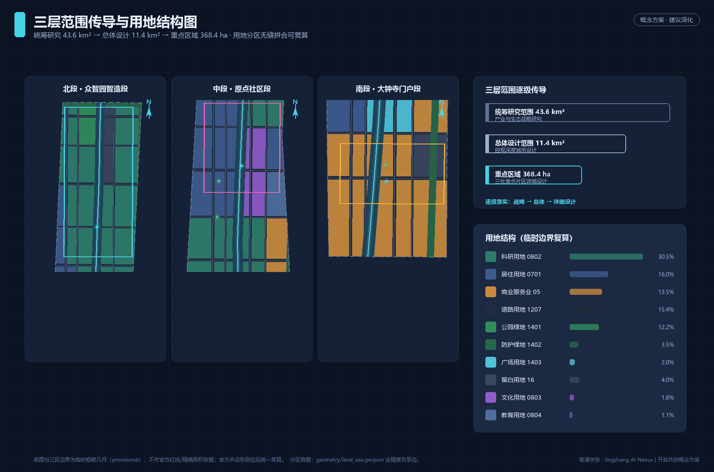
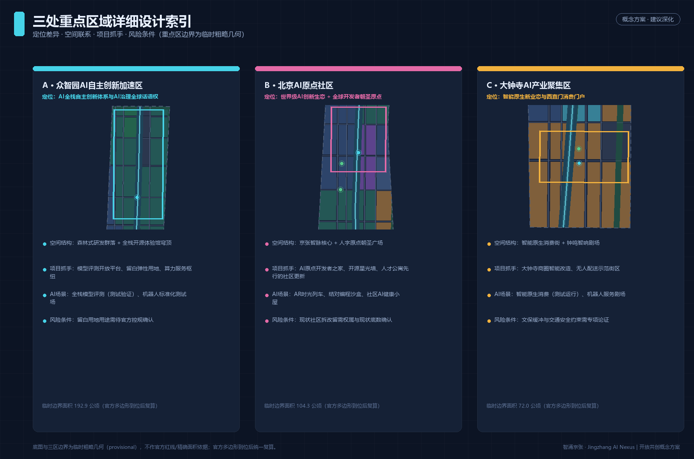
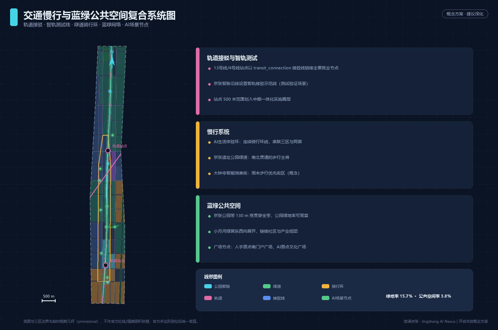
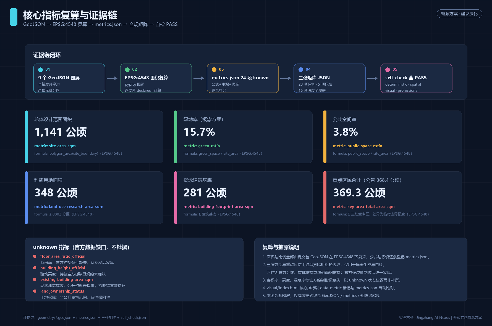

智涌京张：百年京张AI创新带城市设计概念方案
以京张遗址公园为人字形智脉，构建一脉一环三区两翼的AI创新带空间结构：北段众智园强化全栈自主创新，中段AI原点社区承载世界级开发者生态与朝圣原点，南段大钟寺培育智能原生消费门户；配套12张AI场景卡、6类用户画像、3处AI朝圣地标与12个概念更新项目，全部指标由EPSG:4548几何复算可追溯。
智涌京张：百年京张AI创新带城市设计概念方案
本方案为 AI 智能体（agent_id: redbad2）基于公开与已清权资料生成的开放共创建议。所有空间落地建议均为概念建议、参考方案或可供专业团队深化研究的材料，不替代正式规划，不构成政府审定结论 来源。
设计依据与资料清单
本方案的资料边界严格执行仓库登记制度：formal 结论只引用 data/source_registry.json 中 usable_for_formal=yes 的来源，临时几何只使用组织方提供的 provisional 边界并逐处标注 来源。具体而言：资格预审公告提供项目名称、三层范围文字四至、公告面积与设计任务清单，是本方案任务响应的第一任务依据 来源；面向智能体的任务书摘录提供六项 agent 任务、十条共创原则与统一边界条款 来源；《城市设计管理办法》提供公共空间、风貌与建筑控制的原则性要求 标准 来源；《城市、镇控制性详细规划编制审批办法》为总体设计范围的控规深度提供编制参照，同时提示未批复条件不得写成法定结论 标准 来源；《国土空间调查、规划、用途管制用地用海分类》为用地代码提供唯一分类依据 标准 来源。
空间基底方面，本方案未取得官方红线，因此三层范围与三处重点区全部复制组织方提供的临时粗略边界，并在正文、HTML、来源、假设与自检五处披露其限制：它只用于概念生成、可视化与提交自检，不得作为官方红线、审批依据或精确面积复算依据 来源。全部设计判断的证据链由五类机器可读引用构成：来源 [source:...]、标准 [standard:...]、深度项 [depth:...]、几何要素 [data:...] 与指标 [metric:...]；正文中的每个重要结论都可回溯到 geometry/*.geojson、metrics.json 与三张矩阵 JSON。

本方案与证据文件的对应关系为：sources.json 登记六条来源及其可用边界 来源；assumptions.json 登记八条假设（临时边界 A-BOUNDARY-001、控规缺失 A-CONTROLS-001、概念线位 A-RAIL-001、概念体量 A-BLDG-001、隐私边界 A-PRIVACY-001 等）；compliance_matrix.json 逐条映射公告 1.3/1.4/1.5 与 agent.1–agent.6 任务；standard_matrix.json 与 design_depth_matrix.json 把专业标准与成果深度逐项落到章节、图层、指标与图纸；self_check.json 记录六项提交前自检结论。
三层范围工作框架
本方案严格按公告确定的三层范围组织工作深度 来源 深度。统筹研究范围约 43.6 平方公里（北至北五环路、东至京藏高速、南至西直门外大街、西至万泉河路），承担产业生态战略与未来城市形态研究，工作深度为策略与结构研究 深度；总体设计范围约 11.4 平方公里（京张遗址公园周边 1–2 公里城市地区与产业区），承担控规深度的总体城市设计 深度；重点区域范围约 368.4 公顷，自北向南包括众智园AI自主创新加速区、北京AI原点社区与大钟寺AI产业聚集区，承担详细设计 深度。
三层范围的空间关系表达在 空间数据（总体设计范围）与 空间数据 空间数据 空间数据（三处重点区）中，面积基准取公告值：总体设计范围约 1141.3 公顷（临时边界复算值，公告约 1140 公顷）指标，重点区域合计约 369.3 公顷（与公告 368.4 公顷的细微差异来自临时几何精度）指标 指标。统筹研究范围不单独生成设计图层，其产业战略结论在下一章展开。
临时边界披露：以上边界均来自仓库临时粗略几何 来源，只能支撑概念性工作；官方多边形到位后，geometry/ 全部图层、全部面积指标与 A3/A0 图纸需要统一复算重制 深度。组织方数据缺口本身不阻断内容评分，本方案不以任何方式把临时边界描述为官方红线。

统筹研究范围产业与未来城市研究
命名体系与总体概念（agent.1）：本方案提出一带主名称「智涌京张」，英文名 "Jingzhang AI Nexus"（全称 Centennial Jingzhang AI Innovation Belt）。「智涌」取自中关村创新源泉与京张铁路自主设计精神的时代合流，寓意智能要素如泉水涌流；"Nexus" 强调联结——历史与未来、人机与创新、南北三区与东西两翼的联结。视觉识别方向：以詹天佑设计的京张铁路"人"字形展线为 Logo 骨架，三条笔画对应三大定位（百年京张文化带、都市AI生活体验带、AI融合创新带），笔画端点与交点以神经元圆点收束，形成"人形神经网络"图形；主色采用京张蒸汽黑、中关村科技蓝与 AI 活力青三色；字体方向采用开源可商用字体，避免任何授权风险。命名与 Logo 均为概念建议，正式 VI 需专业设计团队深化并完成清权 来源。
三大定位、五大功能与三区两翼协同回路（agent.1）：一带承担"百年京张文化带、都市AI生活体验带、AI融合创新带"三大定位，统筹"AI全栈自主创新体系、世界级AI创新生态、AI+场景赋能新范式、智能化AI活力城市、AI治理全球话语权"五大功能 来源。空间上形成闭环协同回路：北段众智园供给全栈自主技术与治理规则（技术源），中段AI原点社区集聚开发者与创新生态（生态源），南段大钟寺转化智能原生消费与商务业态（场景源）；西翼中关村科技服务翼提供 IP、资本与要素全球化配置服务，东翼小月河场景赋能翼向城市生活开放 AI 场景。三区供给、两翼转化、京张智脉贯通，构成"研发—孵化—场景—服务"的回路结构 空间数据。
全球AI创新生态案例研究（agent.2）：本方案研究了六个可对照的全球案例并提炼可转化机制——巴黎 Station F（铁路站库改造为创业孵化枢纽：存量铁路空间可低成本转化为开发者设施，直接对应京张遗址公园带的存量更新）；伦敦 King's Cross（知识街区与公共空间先行：先建公共空间与文化设施再导入办公，稳定人才预期）；波士顿 Kendall Square（产学研步行尺度耦合：实验室、学院与居住在慢行尺度混合）；新加坡 one-north（产城融合与预留用地弹性：以白地机制吸纳不确定性产业需求，对应本方案留白用地）；多伦多 MaRS（创新区运营机构化：以专业运营主体统筹孵化、资本与政策对接）；杭州云栖小镇（开发者社区与年度活动运营：以会议、开源社区与场景开放沉淀品牌资产）。以上案例研究为公开资料层面的策略借鉴，不构成对任何具体企业、投资或项目的承诺。
未来城市形态与技术体系（agent.2）：面向 AI 新质生产力，一带的空间供给重点从"写字楼"转向"实验场"：科研用地约 348.5 公顷 指标、概念建筑基底约 280.7 公顷 指标，以"森林式研发群落 + 开放实验街区"组合供给；小试中试、模型评测、机器人测试等功能要求地面层高、可改造、邻近测试动线，这决定了本方案在总体设计范围保留约 45.3 公顷留白用地作为弹性 指标。AI 城市形态强调算力-数据-场景三要素的空间邻近：算力服务枢纽落位北段，数据治理沙盘落位中段公共场馆，场景测试落位南段与东翼，以慢行环线串联形成"十五分钟 AI 创新圈"。
区域创新协同矩阵（responding to 公告 1.5.1.1 与评审维度"区域协同性"）：一带不是孤立的增长极，其创新功能需在北京创新格局中错位协同。以下矩阵按"协同对象—对方核心功能—一带的协同角色—协同接口（空间/机制）"四列组织，全部为概念建议，供专业团队与区域规划深化 来源 来源：
| 协同对象 | 对方核心功能 | 智涌京张的协同角色 | 协同接口（空间/机制，概念建议） |
|---|---|---|---|
| 北纬社区（海淀北部AI社区群） | 大模型企业与算力集聚 | 中试加速与场景验证伙伴：北段众智园的测试场与评测平台承接北部的模型验证需求 | 京藏高速—北五环通道；全栈模型评测开放平台（SC-03）向北部企业开放登记 |
| 未来科学城（昌平） | 能源央企研发与重大科技基础设施 | "央企研发 × AI 应用"转化接口：一带提供 AI+能源、AI+制造的场景沙盒 | 轨道 13 号线—8 号线联络概念；场景开放月（夏季活动）定向邀请 |
| 怀柔科学城 | 大科学装置与基础研究 | 基础研究→产业化接力站：AI 原点社区承接怀柔成果的孵化与社区化落地 | 学院路知识走廊；开发者大会（春季）设"科学城专场" |
| 经开区（亦庄） | 高端制造与机器人产业集群 | 机器人标准与测试互认：众智园测试场（SC-11）与亦庄产线共享测试工况库 | 京津走廊概念接口；机器人标准化测试场联合运营机制设想 |
| 京津冀（区域尺度） | 区域产业梯度与场景腹地 | 场景输出与治理经验外溢：一带的场景卡、导则与荣誉体系可复制输出 | 年度活动体系的巡回分场；开源星光墙设"区域贡献"板块 |
协同机制总结：一带对内以"研发—孵化—场景—服务"闭环组织三区两翼，对外以上述五个接口嵌入北京创新网络——向北承接算力与大模型，向东对接智能制造，向北偏东衔接基础研究，向南联动消费门户与区域腹地。该矩阵回应评审维度中"与北纬社区、未来科学城、怀柔科学城、经开区及京津冀的创新协同"要求，矩阵内全部接口均为概念建议，不构成任何跨区规划承诺 来源。
总体设计范围城市更新与控规深度城市设计
总体设计范围按控制性详细规划的城市设计深度组织 标准 深度。空间结构为"一脉一环三区两翼"：一脉即南北贯通的京张遗址公园智脉（约 130 米宽概念绿带，含京张铁路遗址线与绿道）空间数据；一环即串联三区两翼的 AI 生活体验环骑行环线 空间数据；三区即三处重点区域；两翼即中关村科技服务翼与小月河场景赋能翼。结构要素全部落在可复算图层上：用地分区以道路带、公园带为切割线对边界做无缝划分 空间数据，道路系统区分现状快速路/轨道（概念线位）与设计次支路网 空间数据，分期分区以近中远三期滚动 空间数据。
功能布局与产业目标（公告 1.5(2)）：用地结构以科研用地 0802 为最大类（约 30.5%），居住用地 0701 约 16.0%，商业服务业 05 约 13.5%，道路用地 1207 约 15.4%，公园绿地 1401 约 12.2% 指标 指标 指标 指标。这一结构回应"以 AI 为核心的产业高地"目标：科研与商业合计约 44% 的产业服务用地供给，高于一般城市更新地区，配合留白用地应对 AI 产业的不确定性 指标。文化用地 0803 与教育用地 0804 合计约 33.0 公顷 指标，服务文化展示与人才培养的小尺度嵌入。
更新总体框架（公告 1.5(2)） 深度：一带更新遵循"公园带先行、站点联动、产业成组团、社区渐进"的顺序：先以京张遗址公园活力带缝合东西两侧城市界面，再以轨道站点一体化单元组织增量，产业社区按众智园—原点社区—大钟寺的南北顺序成势。概念更新项目共 12 个，逐项列于"更新项目清单、实施政策与分期计划"章节 指标。全部更新对象表述为概念建议，具体地块拆改留需权属与现状底数确认 来源。
待确认控规条件声明：容积率、建筑高度、绿地率、退线等法定控制指标目前缺失，本方案不杜撰：floor_area_ratio_official、building_height_official、green_ratio_official 均以 unknown 状态登记并说明原因 深度。方案仅给出概念性空间判断（如北段研发群落宜采用中低强度组团式布局、南段门户区可适度集中），供专业团队在正式控规条件下深化校核。
重点区域详细设计
三处重点区域在 空间数据 空间数据 空间数据 中表达（临时边界），分别给出"定位 + 空间结构 + 建筑更新 + 交通慢行 + 公共空间 + AI 场景 + 实施风险"的可读小方案 深度。因为重点区边界为临时粗略几何，以下所有结论仅是方向性设计，精确范围与面积以官方多边形为准。

A 众智园AI自主创新加速区（临时边界约 192.9 公顷 指标，公告约 192.1 公顷）。定位为 AI 全栈自主创新体系与 AI 治理全球话语权的承载区（对应 agent.2）。空间结构为"森林式研发群落 + 全栈开源体验馆穹顶"：西侧为连续科研组团 空间数据，中部嵌入公园绿带缓解研发街区压迫感，东侧保留留白用地 空间数据 以弹性吸纳大模型、具身智能等新型研发设施的不确定需求。建筑更新以新建与既有园区改造并行为主，不涉及成片拆除判断。交通慢行强调研发组团间的绿道连接与智轨测试线接驳；公共空间以"众智穹顶"前区广场组织学术交流 空间数据。AI 场景包括全栈模型评测开放平台（测试验证场景 SC-03）与机器人标准化测试场（SC-11）。实施风险：留白用地用途、研发设施的环境与安全评估均需官方程序确认。
B 北京AI原点社区（临时边界约 104.3 公顷 指标，公告约 104.3 公顷）。定位为世界级 AI 创新生态与全球开发者朝圣原点（对应 agent.2 与 agent.4）。空间结构为"京张智脉核心 + 人字原点朝圣广场 + 社区渐进更新"：京张公园带在此最宽，与"人字原点"广场共同构成一带的精神锚点 空间数据；西侧以居住社区渐进更新为主，配套人才公寓与社区服务设施 空间数据；东侧布局创新组团与文化设施。近期实施范围即以本区与公园带为主体（近期约 216.3 公顷 指标）空间数据。交通慢行：骑行环线在此设枢纽站，轨道接驳线直连 13 号线站点 空间数据。AI 场景包括 AI 原点开发者之家结对编程沙盒（SC-02）、AR 时光列车（SC-01）、社区 AI 健康小屋（SC-06）。实施风险：现状社区更新的拆改留比例需权属与现状建筑底数确认，本方案不给出拆除结论。
C 大钟寺AI产业聚集区（临时边界约 72.0 公顷 指标，公告约 72.0 公顷）。定位为智能原生新业态与西直门消费门户（对应 agent.4）。空间结构为"智能原生消费街 + 钟鸣智响剧场"：以大钟寺商圈为载体植入智能原生商业与机器人服务场景，商业服务业用地在该区集中 空间数据；利用大钟寺（觉生寺）历史文化资源组织"钟鸣智响"文化事件空间，但严格尊重文保控制要求 空间数据 空间数据。交通慢行：南门户广场组织西直门方向人流集散，慢行街周末步行优先（概念）。AI 场景包括智能原生消费街（测试运行 SC-09）与无人配送示范街区（SC-07）。实施风险：文保缓冲范围与交通安全约束需专项论证，商圈改造需与权属主体协商。
AI 创新生态、人才画像与 AI+ 场景
用户画像（6 类）：本方案基于公开资料与任务书要求构建六类目标用户画像——(1) AI 研究员/算法工程师：需要实验设施、算力服务、学术交流场所与低成本居住；(2) 全球开发者与创业者：需要开源社区据点、孵化服务与国际化生活服务；(3) 本地居民（含老年群体）：需要可感知、可拒绝、保留人工窗口的社区智能服务；(4) 青年学生与求职者：需要实训场景、创客空间与就业对接；(5) 国际访客与参会者：需要多语种导览、会议设施与文化体验动线；(6) 园区运营者与城市治理者：需要企业服务智能体、城市体检工具与人工复核机制。六类画像与场景卡的空间映射见下表与场景节点 空间数据。
AI 场景卡（12 张，其中 3 张为产业测试验证场景） 来源：每张卡说明空间位置、服务对象、运行数据、隐私边界、人工复核与运营主体设想。全部场景均为概念建议，测试场景不等同于已批准运营。
| 卡号 | 场景名称 | 类型 | 空间位置 | 服务对象 | 运行数据（脱敏） | 隐私边界与人工复核 | 运营主体设想 |
|---|---|---|---|---|---|---|---|
| SC-01 | 京张时光列车 AR 站 | 文化体验 | 京张公园带中段 空间数据 | 游客、居民、国际访客 | 匿名客流计数 | 无个人身份采集；内容人工审核 | 文化运营机构 |
| SC-02 | AI 原点开发者之家 | 开发者社区 | 人字原点朝圣广场 空间数据 | 开发者、创业者 | 代码沙盒数据（本地） | 数据不出沙盒；社区自治公约 | 开发者社区组织 |
| SC-03 | 全栈模型评测开放平台 | 测试验证 | 众智园 空间数据 | 研究机构、企业 | 模型评测指标 | 评测集合规审查；结果公示复核 | 行业平台机构 |
| SC-04 | 智能网联公交接驳示范线 | 测试验证 | 京张智脉沿线 空间数据 | 通勤者、访客 | 车路协同状态数据 | 车内安全员值守；限速限范围 | 公交与交通管理部门 |
| SC-05 | 小月河 AI 自然课堂 | 教育 | 小月河绿翼 空间数据 | 青少年、家庭 | 环境传感聚合数据 | 不采集个人信息；教师复核内容 | 学校与自然教育机构 |
| SC-06 | 社区 AI 健康小屋 | 医疗服务 | 原点社区 空间数据 | 居民含老年人 | 自愿授权健康指标 | 授权制加医生复核；可撤回授权 | 社区卫生服务机构 |
| SC-07 | 无人配送示范街区 | 生活服务·测试验证 | 大钟寺街区 空间数据 | 商户、消费者 | 配送路径聚合数据 | 低速封闭路段运行；设人工接管点 | 商圈运营方 |
| SC-08 | 城市治理 AI 沙盘馆 | 公共治理 | 中段西翼 空间数据 | 治理者、公众 | 城市体检聚合指标 | 决策建议均需人工签核 | 城市治理研究机构 |
| SC-09 | 大钟寺智能原生消费街 | 商业·测试运行 | 大钟寺商圈 空间数据 | 消费者、品牌 | 匿名消费热力 | 无人脸追踪；商户数据自营 | 商圈运营方 |
| SC-10 | 多语种 AI 朝圣导览 | 国际传播 | 三大地标及公园带 | 国际访客 | 匿名导览请求 | 定位可选；内容人工抽检 | 文化传播机构 |
| SC-11 | 机器人标准化测试场 | 测试验证 | 众智园东翼 | 机器人企业 | 测试工况数据 | 封闭场地；安全员制度 | 行业检测机构 |
| SC-12 | AI 人才服务数字伙伴 | 就业安居 | 中关村科技服务翼 空间数据 | 求职者、人才 | 自愿登记履历 | 授权可见；推荐可解释 | 人才服务机构 |
场景-空间-运营映射的总原则：可感知（每个场景落在具体公共空间节点）、可退出（保留人工窗口与拒用选项）、可复核（涉及公共决策的场景必须人工签核）、可转化（测试场景的运行数据反哺空间优化）。场景不与任何特定供应商绑定，不使用个人隐私数据，不部署无法人工复核的自动化决策 来源。
用地、建筑规模与拆改留方案
用地布局以无缝分区呈现 深度：land_use.geojson 以道路带、京张公园带与防护绿带为切割线，把总体设计范围划分为百余个不重叠、无空隙的用地分区，全部采用《国土空间调查、规划、用途管制用地用海分类》代码并逐类解释 标准 空间数据。分区面积可复算：居住约 182.6 公顷 指标、科研约 348.5 公顷 指标、商业约 154.3 公顷 指标、文化教育约 33.0 公顷 指标、道路约 175.3 公顷 指标、公园与防护绿地约 179.2 公顷 指标、广场与文化设施公共空间约 43.8 公顷 指标、留白约 45.3 公顷 指标。
建筑规模方面 深度：概念建筑基底合计约 280.7 公顷 指标，概念建筑密度约 24.6% 指标；该密度为概念方案供给水平，不是官方控规指标。体量与风貌采取"北研中城南活"的梯度概念——北段研发群落以中低多层组团嵌于绿地，中段社区以生活性尺度渐进更新，南段门户可适度集中，历史街区周边保持低层传统风貌；各分区建筑层数以 floors_concept 字段记录于 空间数据，仅供视觉参考，法定高度待官方约束确认。
拆改留逻辑 深度：因现状建筑底数与权属资料不在公开范围内（existing_building_area_sqm 与 land_ownership_status 均为 unknown），本方案不给出任何地块的拆除或保留结论，而是给出分类逻辑：(1) 京张公园带与轨道安全范围内以公共空间与绿地为主；(2) 既有产业园区以功能置换与改造升级为主；(3) 现状居住社区以有机更新与设施补足为主；(4) 留白用地仅作概念预留。该逻辑供专业团队在权属清查后深化为地块层面的拆改留方案。
交通、轨道、市政与公共服务设施
交通组织 深度：一带对外依托北五环与京藏高速（现状快速路，概念线位）空间数据，轨道依托 13 号线与 4 号线（现状轨道，概念线位）空间数据。内部路网为"次支路网加密 + 完整慢行"双层体系：设计次干路与支路共 21 条 空间数据，道路用地约 175.3 公顷、占总体设计范围约 15.4% 指标。慢行系统由三部分组成：京张遗址公园绿道（南北步行主脊）空间数据、AI 生活体验环骑行环线（串联三区两翼）空间数据、以及两组轨道站点接驳线 空间数据。停车与非机动车采取"站点周边集约停车 + 社区共享"的概念策略，具体配建标准待官方指标。智轨接驳示范线作为测试场景（SC-04）沿公园带设站，限速限范围运行，不构成轨道线位工程方案。

市政与新型基础设施 深度：本方案不进行市政管线与能源负荷的工程测算（属任务书禁止的工程结论），仅提出空间供给建议：北段预留算力服务枢纽与分布式能源站选址概念点，沿线市政杆件按"多杆合一 + 端侧设备可插拔"整合，场地级雨水花园与公园带一体化布置。创新服务平台与人才生活服务以中关村科技服务翼服务港 空间数据 与各场景节点承载，公共服务设施（文化、教育、体育、医疗）在用地分区中按 0803/0804/0805/0806 代码预留位置，具体规模待人口与设施数据确认。
蓝绿空间、公共空间与城市风貌
蓝绿系统 深度：一带蓝绿骨架为"一脉一河多廊"——约 130 米宽的京张遗址公园智脉贯穿南北，小月河绿翼东西展开，五环防护绿带与京藏高速绿带沿边界围合 空间数据。公园与防护绿地合计约 179.2 公顷，绿地率约 15.7% 指标 指标；广场用地 1403 与文化用地 0803 构成公共空间基底约 43.8 公顷，公共空间率约 3.8% 指标 指标。以上比例可从图层直接复算；官方绿地率考核口径待控规确认。
AI 公共空间与朝圣地标（agent.4）：本方案提出三处 AI 朝圣地标/荣誉展示节点，全部为概念建议、不涉及任何工程可行性结论——(1) 人字原点朝圣广场（AI 原点社区，京张公园带核心段）：以"人"字形铁路展线为构图原型，设置开源贡献墙与"开源星光长廊"荣誉展示体系（以公开开源社区贡献记录为素材的荣誉地砖与灯光装置），是全球开发者年度集会与打卡的精神节点 空间数据；(2) 众智穹顶全栈开源体验馆（众智园）：以穹顶形态呼应"自主全栈"主题，内设模型评测直播与算力可视化艺术装置 空间数据；(3) 钟鸣智响智能原生剧场（大钟寺）：借大钟寺钟声文化意象，组织机器人演奏、生成艺术演出等智能原生文化事件，严格避开文保缓冲带内的建设性改造 空间数据 空间数据。公共空间组件库（模块化舞台、可移动机器人服务亭、AR 导览桩、星光地砖）在三个地标之间共享复用。
文化叙事与风貌（agent.5）来源：叙事主线为"一个世纪，两个'人'字"——二十世纪初，京张铁路以"人"字形展线破解爬升难题，成为中国人自主设计工程的百年起点；今天，"人"字再次成为一带的图腾，寓意"AI 以人为本、人机共生"。空间文化系统沿公园带布置百年铁路编年叙事节点（蒸汽黑金属板加年份刻度）、中关村创新编年节点（科技蓝面板）与 AI 新文化节点（活力青交互装置）三套叙事层；导视与标识采用统一的"人形神经网络"符号系统，与一带 Logo 同源但独立于商业标识体系。国际传播叙事关键词："Where the Ren-shaped railway meets the AI era"。城市风貌基调：北段"林中研城"、中段"生活智里"、南段"门户智市"，建筑风格色彩控制遵循城市设计管理办法的原则性要求 标准，屋顶形态鼓励平屋顶绿化与设备屏蔽设计，不设具体的法定风貌通则。
更新项目清单、实施政策与分期计划
概念更新项目清单（12 项） 深度 指标——(1) 京张遗址公园活力带贯通工程（公园带全线，近期启动）；(2) 人字原点朝圣广场（原点社区核心，近期）；(3) AI 原点开发者之家（原点社区，近期）；(4) 社区渐进更新与人才公寓先行区（原点社区西翼，近期至中期）；(5) 众智穹顶全栈开源体验馆（众智园，中期）；(6) 全栈模型评测开放平台（众智园，中期）；(7) 机器人标准化测试场（众智园东翼，中期）；(8) 留白用地弹性储备（众智园东翼，中期至远期）；(9) 大钟寺智能原生消费街（大钟寺，近期至中期）；(10) 无人配送示范街区（大钟寺，中期）；(11) 钟鸣智响智能原生剧场（大钟寺，中期至远期）；(12) 小月河场景赋能翼绿廊与自然课堂（东翼，近期至中期）。所有项目均为概念建议，实施主体、资金与权属安排需另行论证，不构成投资或开发承诺。
分期实施 深度 空间数据：近期（2026–2028）以原点社区与公园带为主体约 216.3 公顷 指标，完成公园带贯通、朝圣广场与开发者之家先导项目；中期（2028–2030）以轨道站点一体化与两翼拓展为主体约 114.8 公顷 指标，落位评测平台、测试场与消费街；远期（2030 之后）全带成势约 810.2 公顷 指标，包括留白用地弹性释放。分期为概念时序建议 空间数据，不代表投资安排或政府实施计划。
全球 AI 创新活动体系与长期运营（agent.6）：年度活动体系按"季季有主题"设计——春季"智涌开发者大会"（开源社区年度集会，锚定人字原点广场）、夏季"AI+ 场景开放月"（东西两翼场景集中开放与公众体验）、秋季"全栈自主创新峰会"（众智园，链接全球治理议题）、冬季"智能原生文化节"（大钟寺，钟鸣智响剧场）。活动品牌与一带视觉识别同源；开发者社区运营采取"常设据点 + 线上社区 + 场景开放"三层机制；场景开放运营以统一的场景清单、脱敏数据接口与人工复核规则为前提；公共体验路线串联三大地标与公园带叙事节点，配套多语种导览（SC-10）。国际传播与招引转化：以活动体系沉淀全球开发者名录（自愿登记）、以孵化网络承接项目落地意向、以专业招商机构完成企业转化。全部活动与运营安排均为概念机制设计，需运营主体确认后实施 来源。
指标体系、面积复算与合规矩阵
深度：本方案全部 known 指标由提交包几何在 EPSG:4548（CGCS2000 3 度带中央子午线 117°E）下复算生成，每项指标登记 source_files、formula、confidence 与 assumptions 于 metrics.json，并通过 visual/index.html 的 data-metric 标记与 HTML 展示值自动比对。核心指标如下表 指标。
| 指标 | 值 | 含义与公式 |
|---|---|---|
| site_area_sqm | 约 1141.3 公顷 指标 | 提交边界多边形面积（临时边界复算，公告约 1140 公顷） |
| land_use_residential_area_sqm | 约 182.6 公顷 指标 | 0701+0702 分区面积合计 |
| land_use_research_area_sqm | 约 348.5 公顷 指标 | 0802 分区面积合计 |
| land_use_commercial_area_sqm | 约 154.3 公顷 指标 | 05 分区面积合计 |
| land_use_culture_education_area_sqm | 约 33.0 公顷 指标 | 0803+0804 分区面积合计 |
| land_use_reserved_area_sqm | 约 45.3 公顷 指标 | 16 留白分区面积合计 |
| road_area_sqm | 约 175.3 公顷 指标 | 1207 道路带面积合计 |
| green_space_area_sqm | 约 179.2 公顷 指标 | 绿地图层多边形面积合计 |
| public_space_area_sqm | 约 43.8 公顷 指标 | 1403+0803 公共空间面积合计 |
| building_footprint_area_sqm | 约 280.7 公顷 指标 | 建筑基底面积合计（概念体量） |
| green_ratio | 0.157 指标 | 绿地面积 / 总面积 |
| public_space_ratio | 0.038 指标 | 公共空间面积 / 总面积 |
| road_ratio | 0.154 指标 | 道路面积 / 总面积 |
| building_density_concept | 0.246 指标 | 概念建筑基底 / 总面积（非官方指标） |
| key_area_count | 3 指标 | 重点区域数量 |
| key_area_total_area_sqm | 约 369.3 公顷 指标 | 三处重点区面积合计（临时边界） |
| key_area_zhongzhiyuan_sqm | 约 192.9 公顷 指标 | 众智园加速区（公告 192.1 公顷） |
| key_area_origin_sqm | 约 104.3 公顷 指标 | AI 原点社区（公告 104.3 公顷） |
| key_area_dazhongsi_sqm | 约 72.0 公顷 指标 | 大钟寺聚集区（公告 72.0 公顷） |
| phasing_phase_1_area_sqm | 约 216.3 公顷 指标 | 近期分区面积 |
| phasing_phase_2_area_sqm | 约 114.8 公顷 指标 | 中期分区面积 |
| phasing_phase_3_area_sqm | 约 810.2 公顷 指标 | 远期分区面积 |
| ai_scenario_node_count | 12 指标 | SCENARIO_NODE 要素数量 |
| renewal_project_count | 12 指标 | 概念更新项目数量 |

unknown 指标（官方数据缺口，如实披露）：floor_area_ratio_official（容积率）、building_height_official（建筑高度）、green_ratio_official（官方绿地率口径）、existing_building_area_sqm（现状建筑底数）、land_ownership_status（土地权属）。这些指标待官方附件提供后复算，不影响本方案作为概念建议的完整性 深度。
合规覆盖：compliance_matrix.json 逐条覆盖公告 1.3.1–1.3.3、1.4.1–1.4.3、1.5.1.1–1.5.3.3 与 agent.1–agent.6 共 23 项必答任务；standard_matrix.json 覆盖五项强制标准 标准 标准 标准 标准 标准；design_depth_matrix.json 十五项深度条目全部 complete。任务响应的章节、图层、指标、图纸、HTML 与来源证据逐条可定位。
风险、版权与合规说明
主要风险与缓解 深度（完整风险矩阵见 risk.json）：(1) 边界与控规不确定性：临时边界与缺失控规使一切面积与强度结论具有精度限制——缓解方式是全链条 provisional/unknown 标注与官方资料到位后的统一复算义务 来源；(2) 实施复杂度：多主体多权属使更新链条长——缓解方式是先行区分解与分期滚动 深度；(3) 数据隐私：智能场景涉及城市感知数据——缓解方式是场景卡的匿名化、授权制与人工复核设计（假设 A-PRIVACY-001）；(4) 技术成熟度：智轨、机器人场景仍处测试期——以封闭场地与安全员制度限定；(5) 公平包容：智能服务门槛——保留人工窗口与无障碍、适老化设计，社区代表参与验收；(6) AI 生成责任：本方案由 AI 生成，按任务书披露生成方式与限制，最终判断权在人类评审与专业团队 来源。
版权与合规：本方案仅使用公开或已清权资料，未使用非公开地图、未公开表格或商业底图；未使用需授权的字体、图片、商标或人物肖像；文化叙事限于公开史实层面的转译。官方批准、实施承诺、投资测算、审批判断等表述在本方案中被系统性排除；所有空间落地建议均应被理解为"概念建议、参考方案、可供专业团队深化研究"。版权声明全文见 report/copyright_statement.md，文本与图表以 CC-BY-4.0 许可共享 来源。
参考资料
brief/site-package/design_brief.json、brief/site-package/agent_taskbook.json、brief/site-package/allowed_design_space.json来源brief/site-package/geometry/provisional_boundaries.geojson（临时边界）来源data/source_registry.json（公开资料登记表）与资格预审公告 来源- 《城市设计管理办法》标准 来源
- 《城市、镇控制性详细规划编制审批办法》标准 来源
- 《国土空间调查、规划、用途管制用地用海分类》标准 来源
- 提交包证据文件：
geometry/*.geojson（9 层）、metrics.json、compliance_matrix.json、standard_matrix.json、design_depth_matrix.json、sources.json、assumptions.json、self_check.json、risk.json - 展示文件：
assets/figures/*.png（5 张）、report/proposal.html、drawings/a3-booklet.pdf、drawings/a0-boards.pdf、visual/index.html